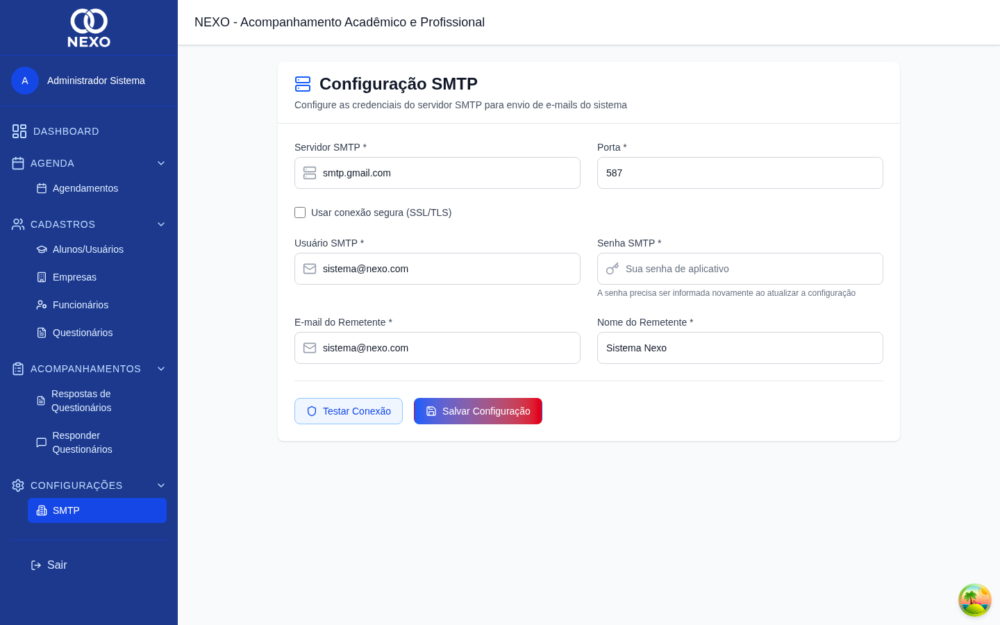
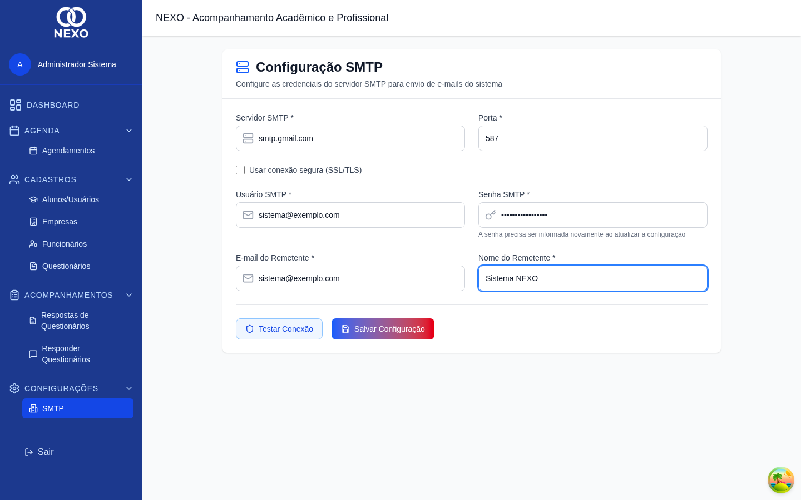
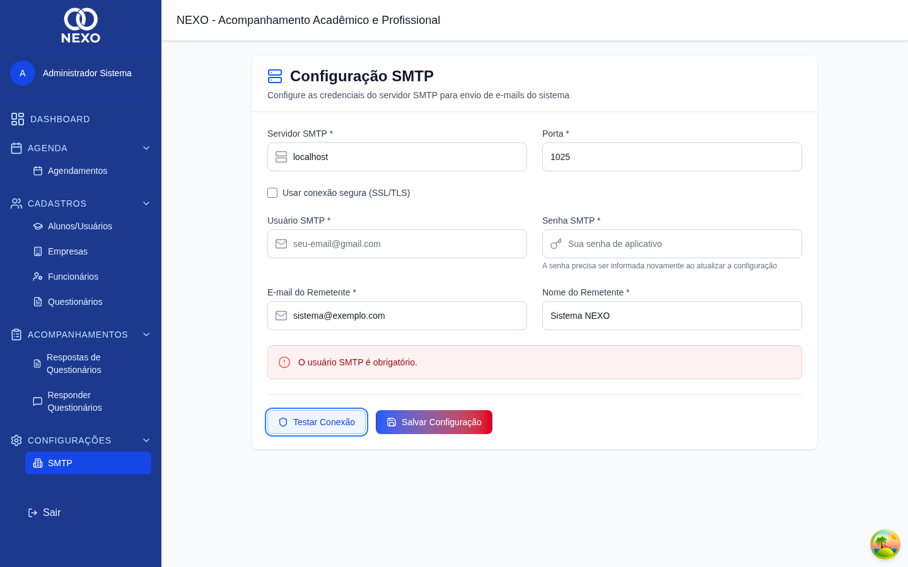

Configuração de SMTP
A configuração de SMTP define o servidor de e-mail usado pelo NEXO para enviar notificações como o link de redefinição de senha. Apenas o Administrador tem acesso a esta tela.
| Ação | ADM | RH | COORD | PROF | DIR |
|---|---|---|---|---|---|
| Configurar SMTP | ✓ | — | — | — | — |
1. Abrir a configuração
No menu, abra Configurações → SMTP.

2. Preencher os dados do servidor
-
Host e porta
Informe o Host (por exemplo
smtp.gmail.com) e a Porta (geralmente587para TLS ou465para SSL). -
Marcar "Secure" quando aplicável
Marque a caixa Secure apenas se sua porta exigir SSL (normalmente a 465).
-
Usuário e senha
Informe o usuário (e-mail) e a senha do servidor SMTP. Use o botão do olho para mostrar/ocultar a senha enquanto digita.
-
Remetente
Preencha o e-mail "De" e, opcionalmente, o nome "De" — esses campos aparecem para quem recebe os e-mails do NEXO.

Configuração pronta para teste.
3. Testar e salvar
Antes de salvar, clique em Testar Conexão. O sistema tenta conectar e mostra o resultado no topo:

Com o teste OK, clique em Salvar Configuração.
Para o Gmail, é preciso gerar uma senha de aplicativo em vez de usar a senha normal da conta. Sem isso, o teste falhará com erro de autenticação.